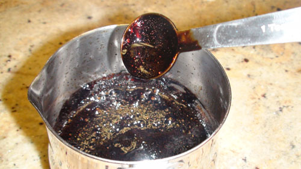
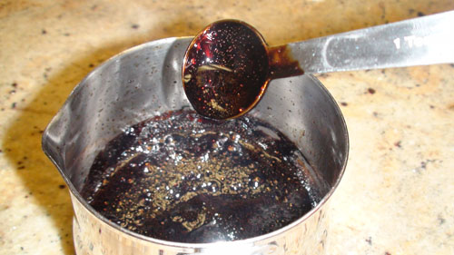

Hi Tipsy people! I’m Jesse, AK’s husband. My friends and I once tossed around a plan to have a real life Iron Chef competition. Like full-scale japanese iron chef, where we have to cook 5 dishes in 1 hour with 1 special ingredient. The trouble was: way too darn expensive. Cost Prohibitive to the nth degree.
So, flash forward another lifetime, and Danielle suggested we do an iron chef competition, but just 1 dish. I die.
So anyway, the secret ingredient: Balsamic Vinegar.
Balsamic vinegar can be tossed with strawberries to bring out there flavor, so I combined it (in syrup form) with home made ice cream. what WHAT!
Ingredients
- 2 cups Whole Milk
- 1 cup Heavy Cream
- 1/2 cup sugar
- 1 tsp vanilla
- Strawberries
- Balsamic Vinegar
Method
- Make sure your ice cream maker is prepared (mine takes 4 hours to fully freeze).
- Combine whole milk, cream, sugar and vanilla in a bowl, whisk. Dice 6 strawberries and add to bowl; add mixture to ice cream maker and start.
- Pour 1/4 to 1/2 cup balsamic vinegar to a small saucepan. Heat on medium heat for 30 minutes until the vinegar is a very heavy syrup.
- Slice more strawberries and add to a bowl of your ice cream. Drizzle balsamic vinegar over the strawberries.
 [/caption]
[caption id="attachment_9013" align="aligncenter" width="500" caption="Stir Stir Stir"]
[/caption]
[caption id="attachment_9013" align="aligncenter" width="500" caption="Stir Stir Stir"] [/caption]
[caption id="attachment_9009" align="aligncenter" width="500" caption="Balsamic Vinegar when we start"][/caption]
[caption id="attachment_9008" align="aligncenter" width="500" caption="30 minutes later. So syruppyyyy"][/caption]
[caption id="attachment_9011" align="aligncenter" width="500" caption="Your ice cream. It's ready!"]
[/caption]
[caption id="attachment_9009" align="aligncenter" width="500" caption="Balsamic Vinegar when we start"][/caption]
[caption id="attachment_9008" align="aligncenter" width="500" caption="30 minutes later. So syruppyyyy"][/caption]
[caption id="attachment_9011" align="aligncenter" width="500" caption="Your ice cream. It's ready!"] [/caption]
[caption id="attachment_9010" align="aligncenter" width="500" caption="Deliciousness"]
[/caption]
[caption id="attachment_9010" align="aligncenter" width="500" caption="Deliciousness"] [/caption]
[/caption]
This recipe is also on We Eatt for your sharing pleasure.


{kind=link}
{kind=link}
This needs to get into my mouth ASAP. Yum.